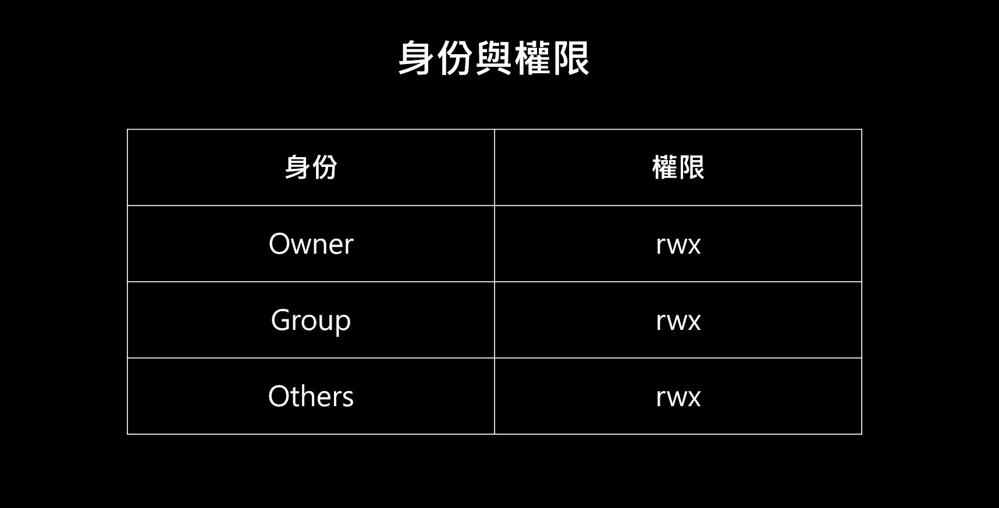
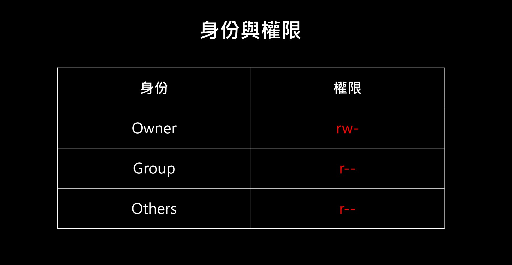
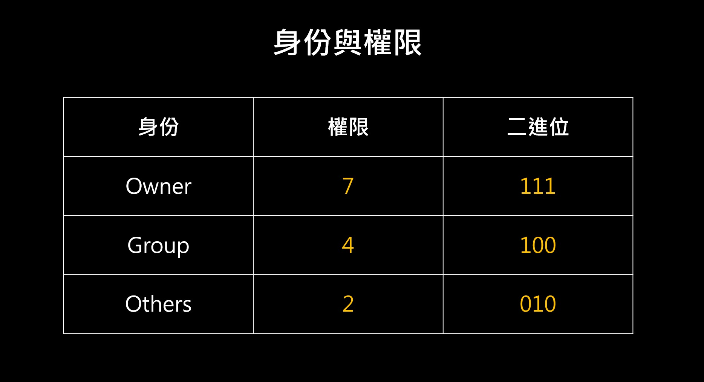
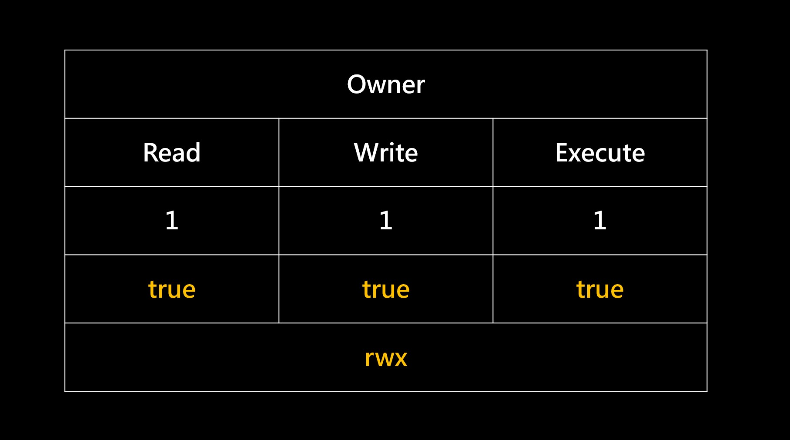

寫一篇一勞永逸的筆記。
簡述
不論是 Linux 還是其他作業系統，都會有個東西：權限管理
權限管理是用來限制這三個動作：
- Read 讀取
- Write 寫入
- Execute 執行
作業系統通常會透過權限管理來設定「什麼身分可以做什麼事？」。
來看個例子，例如在 CLI 輸入：
1 | ls -l |
輸出結果會是：
1 | drwxr-xr-x 1 user 197121 0 十二月 8 2020 '$RECYCLE.BIN'/ |
大概解釋一下這要怎麼看，拿 -rw-r--r-- 1 user 197121 517 二月 21 21:13 caeser.js 來舉例：
-rw-r--r--權限（不是資料夾，所以開頭用-表示）user目前使用的身分197121git 內建的群組（group）身分517檔案大小（Byte）二月 21 21:13最後修改日期（2/21 09:13 PM）caeser.js檔案名稱
順道一提，d 是用來代表資料夾的意思，所以用 d 開頭的就是資料夾。
關於權限的部分留到下面來解說。
先認識使用者種類
Linux 定義了三種身分，分別是：
- owner
- group
- others
每一種身分都有自己的權限：
- r（Read）
- w（Write）
- x（Execute）
所以可以畫成一個表格：

這時候再回來看 rw-r--r-- 應該就很好懂了：

- Owner 具備 Read 和 Write 的權限
- Group 具備 Read 的權限
- Others 具備 Read 的權限
就這樣啦，沒有很複雜。
關於 chmod 指令
chmod 的全文是 change mode，是用來「變更權限」的指令，也就是 rwx 這三個權限囉。
你應該都是這樣用的：
1 | chmod 777 someting.txt |
三個都是一樣的，只差在寫法不同而已。最常見的是第一種用「數字」來表示。（因為比較方便嘛）
至於數字的寫法，網路會教你什麼 [4 + 2 + 1] 之類的算法，我自己看的是蠻混亂的，所以來講一個我覺得比較好理解的方法。
這個方法就是把每一個數字都轉成「二進位」，參考這張圖：

變成 0101 以後，就可以知道對應的 rwx 是 true 還是 false 了：

所以以此類推，最後可以得出：
- Owner rwx
- Group r–
- Others -w-
結合且來就是 rwxr---w-。
如果你覺得自己算很麻煩，可以參考這裡：chmod 計算機
就是這樣囉！